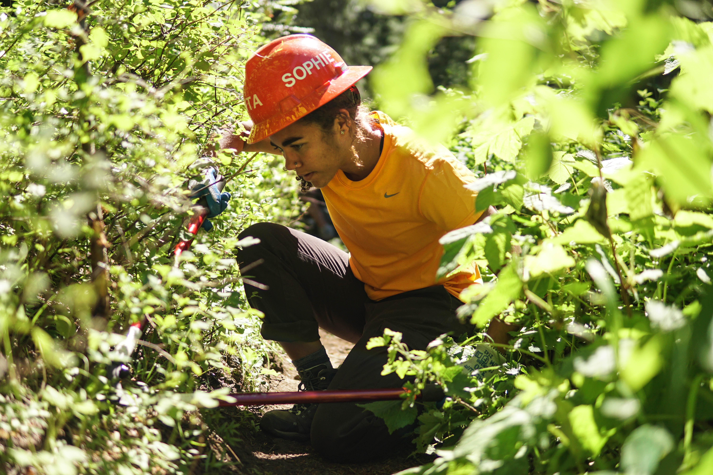

Sophie Brooks
(she/her/hers)
B.S. Environmental Policy & Management 2018
M.S. Geospatial Technologies Candidate 2020
B.S. Environmental Policy & Management 2018
M.S. Geospatial Technologies Candidate 2020
Our planet desperately needs problem solvers and innovators unafraid of sparking change in our built environments. The need for better spatial decisions, policy implementation, and accessible data solutions is paramount to understanding environmental equity and sustainability.
My professional and personal experiences are a culmination of who I am as a leader, critical thinker, and team player. Putting my heart into projects I believe in and always looking to learn new skills are at the core of what I hope to bring to a career in the field or within City Government.
I help those around me feel grounded and heard by listening and staying focused. I am dependable and unafraid of hard work, especially if it’s to better a team in solving a problem. I will keep bringing both my strongest work and personal ethics to everything I do, which is guaranteed to make others challenge themselves while reminding me that who I am is something to be proud of.

Working for Washington Trails Association as an Assistant Crew Leader, 2018
All projects below have been completed through the MSGT (Master of Science in Geospatial Technologies) Program at UW Tacoma. This program focuses on the use and application of geospatial technologies in the urban and environmental planning field, as well as the development of mobile applications used to solve spatial problems.
Each project is an individual lab from the following classes:
Web-Based GIS, Mobile Geospatial Development, Environmental Planning Applications, and Cartography And Data Visualization
Click on each project for a full view.
LinkedIn: Sophia Brooks